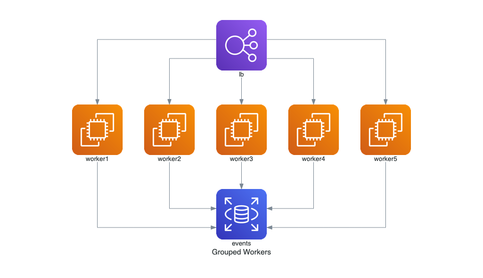
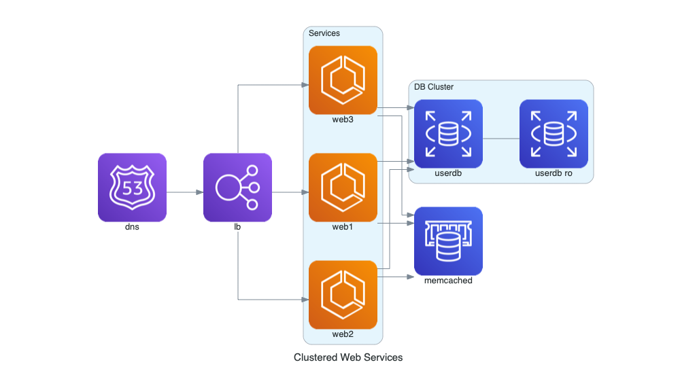
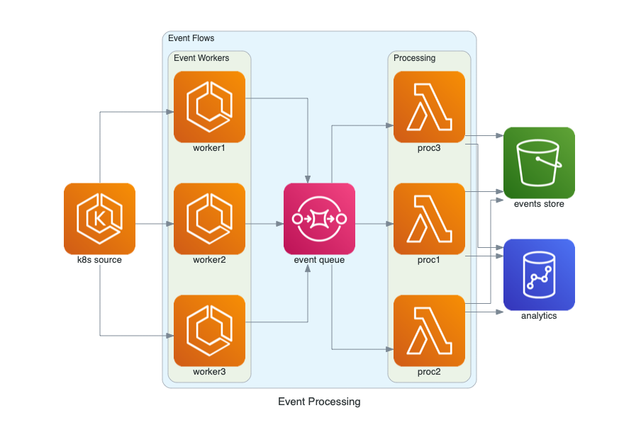
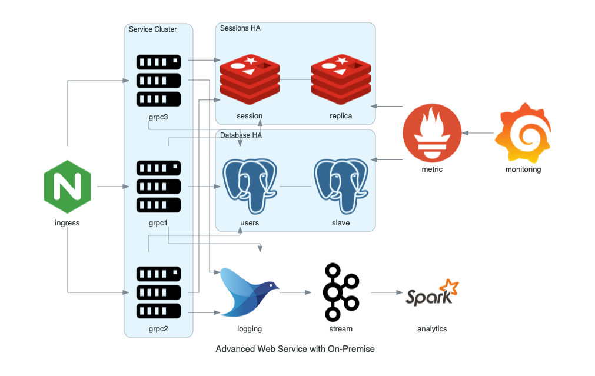

云系统架构
此处整理，专门画云系统架构图的工具。
- 画云架构图
- 用python代码画：
Diagrams
- 用python代码画：
Diagrams
Diagrams- Github
- mingrammer/diagrams: Diagram as Code for prototyping cloud system architectures
- 示例
- 官网
- Examples · Diagrams
- 官网
- Github
具体例子
Grouped Workers on AWS
代码：
from diagrams import Diagram from diagrams.aws.compute import EC2 from diagrams.aws.database import RDS from diagrams.aws.network import ELB with Diagram("Grouped Workers", show=False, direction="TB"): ELB("lb") >> [EC2("worker1"), EC2("worker2"), EC2("worker3"), EC2("worker4"), EC2("worker5")] >> RDS("events")- 效果
- 
Clustered Web Services
代码：
from diagrams import Cluster, Diagram from diagrams.aws.compute import ECS from diagrams.aws.database import ElastiCache, RDS from diagrams.aws.network import ELB from diagrams.aws.network import Route53 with Diagram("Clustered Web Services", show=False): dns = Route53("dns") lb = ELB("lb") with Cluster("Services"): svc_group = [ECS("web1"), ECS("web2"), ECS("web3")] with Cluster("DB Cluster"): db_master = RDS("userdb") db_master - [RDS("userdb ro")] memcached = ElastiCache("memcached") dns >> lb >> svc_group svc_group >> db_master svc_group >> memcached- 效果
- 
Event Processing on AWS
代码：
from diagrams import Cluster, Diagram from diagrams.aws.compute import ECS, EKS, Lambda from diagrams.aws.database import Redshift from diagrams.aws.integration import SQS from diagrams.aws.storage import S3 with Diagram("Event Processing", show=False): source = EKS("k8s source") with Cluster("Event Flows"): with Cluster("Event Workers"): workers = [ECS("worker1"), ECS("worker2"), ECS("worker3")] queue = SQS("event queue") with Cluster("Processing"): handlers = [Lambda("proc1"), Lambda("proc2"), Lambda("proc3")] store = S3("events store") dw = Redshift("analytics") source >> workers >> queue >> handlers handlers >> store handlers >> dw- 效果
- 
Advanced Web Service with On-Premise
代码：
from diagrams import Cluster, Diagram from diagrams.onprem.analytics import Spark from diagrams.onprem.compute import Server from diagrams.onprem.database import PostgreSQL from diagrams.onprem.inmemory import Redis from diagrams.onprem.logging import Fluentd from diagrams.onprem.monitoring import Grafana, Prometheus from diagrams.onprem.network import Nginx from diagrams.onprem.queue import Kafka with Diagram("Advanced Web Service with On-Premise", show=False): ingress = Nginx("ingress") metrics = Prometheus("metric") metrics << Grafana("monitoring") with Cluster("Service Cluster"): grpcsvc = [ Server("grpc1"), Server("grpc2"), Server("grpc3")] with Cluster("Sessions HA"): master = Redis("session") master - Redis("replica") << metrics grpcsvc >> master with Cluster("Database HA"): master = PostgreSQL("users") master - PostgreSQL("slave") << metrics grpcsvc >> master aggregator = Fluentd("logging") aggregator >> Kafka("stream") >> Spark("analytics") ingress >> grpcsvc >> aggregator- 效果
- 